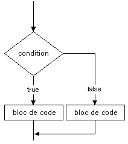
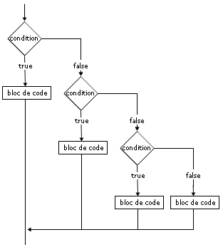

Le transtypage automatique qui peut être fait pour les comparaisons doit être pris en compte pour que ces instructions donnent les résultats attendus.
Instruction conditionnelle if
Comme dans tous les langages, c'est l'instruction la plus utilisée. Le test d'une condition renvoie soit true, soit false. Si la condition est vraie, le traitement est effectué.
Avec un bloc d'instructions introduit par else, nous pouvons spécifier un traitement si la condition est fausse. Nous pouvons aussi enchaîner des tests avec l'instruction elseif.
if (condition) {
instruction;
...
} |
 |
if (condition) {
instruction;
...
} else {
instruction;
...
} |
 |
if (condition_1) {
instruction;
...
} elseif (condition_2) {
instruction;
...
} elseif (condition_3) {
instruction;
...
} else {
instruction;
...
} |
 |
Les accolades entourant les blocs de traitement ne sont obligatoires que s'il y a plusieurs instructions dans les blocs, mais je vous recommande fortement de toujours utiliser les accolades.
Vous devez être vigilant au transtypage automatique qui est fait par PHP pour comparer des valeurs qui ne sont pas du même type et éventuellement utiliser l'opérateur === plutôt que l'opérateur ==.
Instruction conditionnelle switch
Quand la valeur d'une variable particulière détermine différents choix de traitement, nous pouvons utiliser l'instruction conditionnelle switch.
switch (expression) {
case valeur_1:
instruction;
...
break;
case valeur_2:
instruction;
...
break;
default:
instruction;
...
}
La valeur de expression est comparée à la valeur définie par chaque case. instruction est n'importe quelle instruction ou suite d'instructions PHP.
Si une égalité est trouvée entre la valeur de expression
et celle des case, les instructions
associées au case sont exécutées. Si
aucune égalité n'est trouvée, les instructions contenues dans le default sont exécutées.
L'emploi de
l'instruction break arrête l'exécution
des instructions contenues dans le case.
Si break n'est pas employé, les
instructions contenues dans les cases
suivants sont exécutées.
Vous devez être vigilant au transtypage automatique qui est fait par PHP pour comparer des valeurs qui ne sont pas du même type.